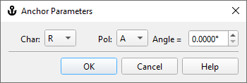

Anchor Parameters
Anchor Parameters
Navigation: OptiLayer Menu Commands > Data Menu > Color Target >
Anchor Parameters
` <color_range_targets.html>`__ ` <idh_edit_color_target.html>`__ ` <electric_field_target.html>`__
Color Targets also offer the ability to define criteria for the minimum relative color variation between a color calculated at a specific angle and other parameters, and the current color. This is where the concept of Anchor Color comes into play. An Anchor Color is the color of the same design that is calculated at a specified angle of incidence, characteristic (T, R, BR), and polarization. For Color Targets with the anChor qualifier, it is essential to specify the Anchor Color. This can be achieved through the Anchor Parameters dialog:

In this example, the Anchor Color will be computed for the reflectance at normal incidence.